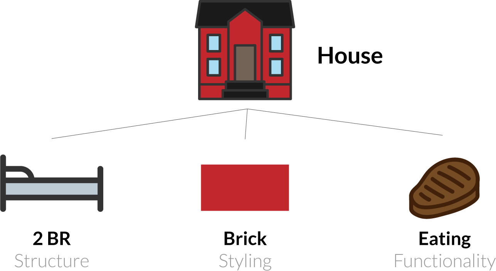
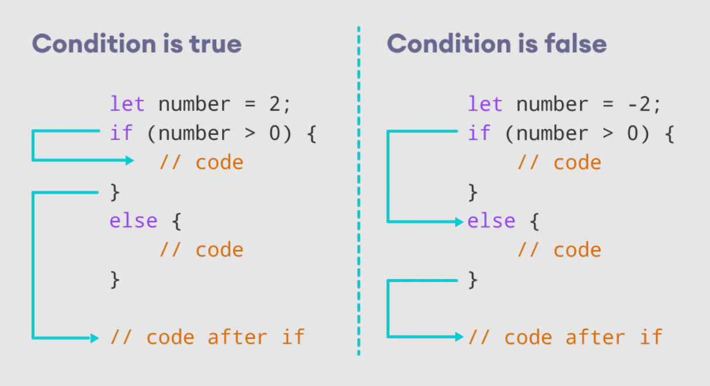
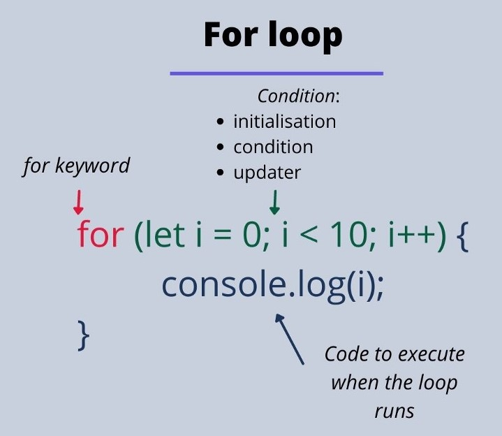
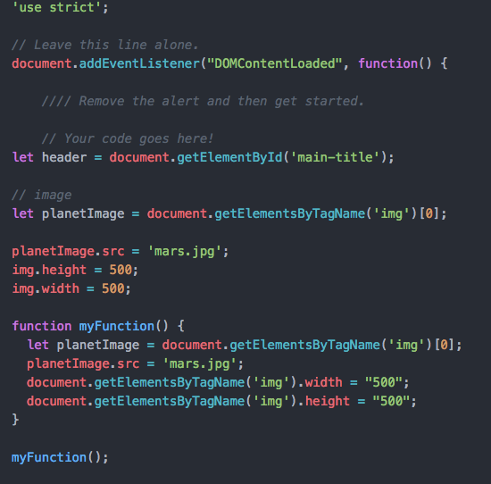
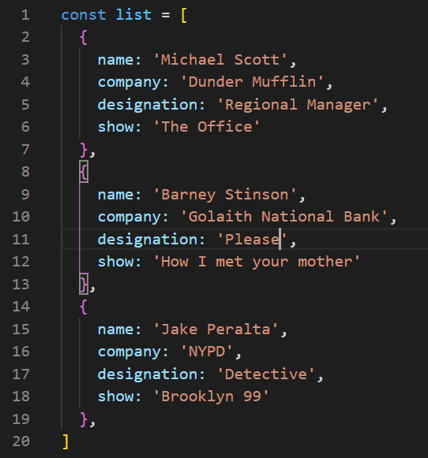
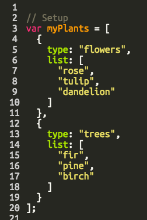

Javascript Dom
1- An analogy to describe JavaScript and its relationship to HTML and CSS.
HTML provides the basic structure of sites, which is enhanced and modified by other technologies like CSS and JavaScript. CSS is used to control presentation,
formatting, and layout. JavaScript is used to control the behavior of different elements.

2- Explain control flow and loops using an example process from everyday life, for example
example for control flow: if (add salt and spices to the food){
the tast of food is delicious
}else {
alert(ohh...it's horrible food)
}
Explain for loop: You go shopping to buy one chocolate, while they have 5 chocolates in the shop.
If it's delicious, go shopping again and again. until all the chocolates are gone.


3- Describe what the DOM is and an example of how you might interact with it.
DOM is used to define the object with its properties that is having
all the document elements and the methods allowing access to them.
There are 5 ways in which you can select elements in a DOM using selectors:
- getElementsByTagName()
- getElementsByClassName()
- getElementById()
- querySelector()
- querySelectorAll()
an example: Imagine this: you have the TV on. You don't like the show that's being streamed,
and you want to change it. You also want to increase its volume.
To do that, there has to be a way for you to interact with your television. And what do you use to do that?
A remote.
The remote serves as the bridge which allows you interact with your television.
You make the TV active and dynamic via the remote. And in the same way,
JavaScript makes the HTML page active and dynamic via the DOM.

4- Explain the difference between accessing data from arrays and objects.
Objects are mutable data structure in javascript which is used to represent a ‘Thing’.
This could be anything like cars, plants, person, community etc.
It stores the data in key value pair and the key can be anything except for undefined.
The keys are iterable and can be accessed in any order.
Arrays are objects only in javascript.
The major difference is that they store the data in an ordered collection in which the data can be accessed using a numerical index.
They are also mutable and data can be modified at any index.
Indexes are zero based which means the first item is stored at Oth index, second at first and so on,


5- Explain what functions are and why they are helpful.
A function is a group of reusable code which can be called anywhere in your program.
This eliminates the need of writing the same code again and again.
It helps programmers in writing modular code.
Functions allow a programmer to divide a big program into a number of small and manageable functions.Functions enable programmers to break down or decompose a problem into smaller chunks,
each of which performs a particular task. Functions allow the same piece of code to run multiple times.
Functions break long programs up into smaller components.
Functions can be shared and used by other programmers.